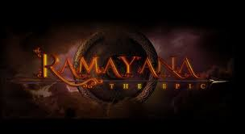

The Ramayana written by Tulsidas known as Ramchaitmanas.The Ramayana is an ancient Sanskrit epic about Rama and Sita. It is one of the two most important ancient epics of India, the first one being the ancient Mahabharata. The Ramayana is an ancient Sanskrit epic which follows Prince Rama's quest to rescue his beloved wife Sita from the clutches of Ravana with the help of an army of monkeys. It is traditionally attributed to the authorship of the sage Valmiki and dated to around 500 BCE to 100 BCE.The story of the Ramayana is about Prince Rama who has been exiled from his kingdom of Ayodhya.The Ramayana is one of the two ancient Sanskrit epics from India. It tells the story of the righteous prince Rama and his rescue of his wife Sita after her abduction by the demon king Ravana.The Epic is traditionally divided into several major kands or books, that deal chronologically with the major events in the life of Rama—Bala Kand, Ayodhya Kand, Aranya Kand, Kishkindhaa Kand, Sundara Kand, Yuddha Kand, and Uttara Kand.The Ramayana teaches us that not only is it possible, but it is also necessary to ensure victory over evil forces. Lord Ram is the epitome of kindness, compassion, and love. His wisdom and patience made it possible for him to follow his inner good without worrying about the loss of luxuries and kingship.The basic teaching fo Ramayana is that no matter how powerful evil is, it will always be defeated by Good.
THE SEVEN KANDS OF RAMAYANA